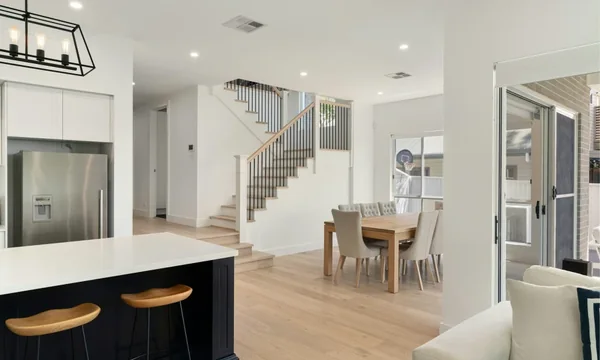

Smaller JPEGs on your Mac.
Drop in photos or a folder. Smooshed saves copies about half the size, at their original dimensions, with their metadata intact. Your originals stay as they are.
Download for MacFree · Apple silicon · macOS 27 or later
What Smooshed does
Smooshed makes JPEG files smaller so shoots take less space and upload faster. It writes new copies at the original dimensions and leaves the originals alone.
Drop photos or a whole folder
Drag JPEGs or folders into the window, or press ⌘O. A dropped folder keeps its name and subfolders in the copy.
About half the size
The automatic Compact setting picks the compression for each photo. On 1,147 photos from real shoots, the batch went from 13.37 GB to 5.78 GB.
Recompresses, doesn’t re-encode
Smooshed works on the JPEG data already in the file instead of decoding to pixels and saving again, so it adds no extra generation loss.
Keeps your metadata
Orientation, EXIF, XMP, IPTC, and color profiles carry over byte for byte.
Won’t compress twice
Photos already processed by Smooshed or JPEGmini are only repacked losslessly, so running a batch again doesn’t stack quality loss.
Works from Lightroom and Finder
Set Smooshed as Lightroom Classic’s After Export app, or use Finder’s Open With, and photos are compressed where they are.
Choose a folder for one batch
Click Change Folder for This Batch… before dropping the photos. The smaller copies go to that folder, and the next shoot goes back to your usual destination.
For Lightroom Classic, choose Smooshed under After Export. It optimizes the exported JPEGs in place. The library originals stay where they are.
Choose Smooshed → Check for Updates… to check for a newer version.

How it was tested
Smooshed was measured against JPEGmini Pro, MozJPEG, and libjpeg-turbo on 1,147 photos from real shoots and 100 public test images. On the real photos, it saved about as much space as JPEGmini Pro, with a similar image score.
See the test results| Compressor | Output | Space saved |
|---|---|---|
| Smooshed Compact | 5.78 GB | 56.8% |
| JPEGmini Pro | 5.80 GB | 56.6% |
Image scores, the public test, and how it was measured are on the results page.